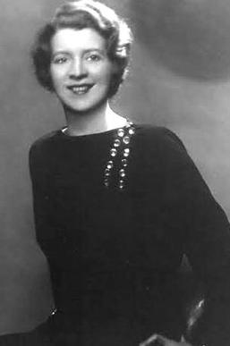
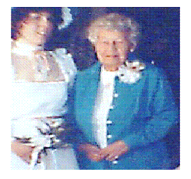

The author for this poem is hard to identify. There are several authors who claim it but three women authors who have most promoted this poem as their work. These three women are Margaret Powers, Carolyn Carty, and Mary Stevenson. While each woman has a story that claims the poem as her own, Footprints is most often identified as a poem with an unknown author.
Here is an image of each woman, firstly Margaret, Carolyn, and lastly Mary.
 To read this poem follow this link